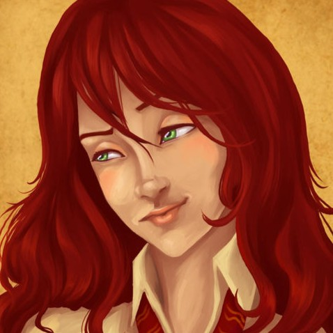
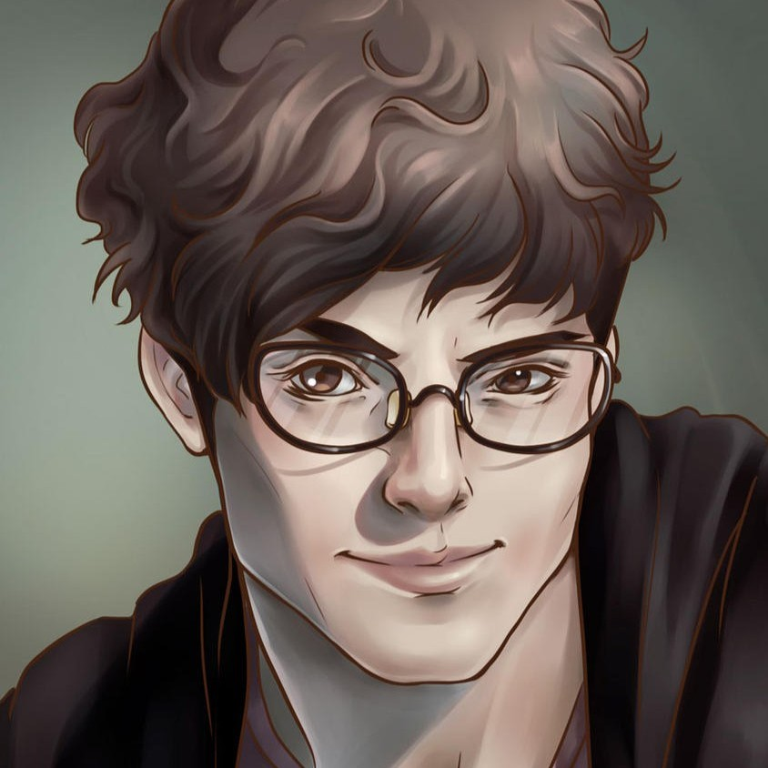

Lily’s Ward, formally Ultima Custodia, was a protection of that left on her son when she died for him on 31 October 1981. For more than sixteen years it would not let dark magic take his life. It turned ’s Killing Curse back on him in , burned at Harry’s touch, and pressed dark magic back wherever he went. (article), “Lily’s Ward” Bound by to the blood of Lily’s sister, it also made number four, a house where no servant of Voldemort could harm him until he came of age.
It is the purest working of ancient magic on record: a protection sealed by a life given, set against a Dark Lord whose power rested on lives taken. It held to the end of the war. In the it yielded to the death Harry chose for himself and kept his soul at the threshold, and at the Battle of Hogwarts its last flare carried him through the Death Eaters’ curses. Then it was spent, and Harry was as mortal as anyone., “The Duel”
Nature
How it is sealed

Lily’s Ward cannot be cast, taught or inherited. It is sealed only by a death freely given for another, and “freely” carries the whole weight of it: the death must be chosen while another way still lies open. Many witches and wizards have died defending the people they loved. Very few have been offered their own lives in exchange and refused. That is why the Ward is so rare, and why no other case was recorded in living memory before Harry’s., “What is given”
Both of Harry’s parents died for him that night, but only one death sealed it. was killed fighting, before anyone offered him anything. Lily was told to stand aside. Voldemort meant to spare her, and she would not move from her son’s cot. Her death was a choice, made with the way out in front of her, and the magic answered to it. (article), “Worlds Apart”
The Ward obeys the law at the heart of all ancient magic: it answers to what is given and resists what is taken. A Horcrux is the same magic run in the opposite direction, a soul torn apart by taking a life. Lily’s protection was sealed by giving one. Lily knew this magic existed. How she came to learn of it is not recorded, and whether she expected it to hold when she refused to stand aside can no longer be asked of her.
What it guards against
At its core the Ward would not let dark magic take Harry’s life. The Killing Curse rebounded from him as an infant. A body that shared itself with Voldemort could not bear to touch him: Quirinus Quirrell’s skin blistered and burned where it met Harry’s., “Quirrell” It also pressed dark magic back in his presence, quietly enough that few ever noticed. The clearest sign was the Dark Mark on ’s arm, whose hold on her went quiet whenever she was near him. (article), “The Dark Mark”
Limits
It was a guard against death by dark magic and nothing wider. It did not spare Harry pain, and it did not stop possession. Ordinary harm, whether an accident, an illness or a fall, lay outside it entirely. It protected only the one it was sealed on, and could not be lent or passed on.
It was also finite. Lily had given one life, and the Ward could spend only what she had given. Each time it turned death aside, it used up part of itself. Rebounding the Killing Curse in 1981 cost it most of all; what remained burned Quirrell and later held Harry’s soul at the threshold. Its quieter work, pressing dark magic back in his presence, cost it little. No one could measure what was left at any given time, so no one who understood the Ward, Dumbledore least of all, would trust it to turn a second Killing Curse.
Above all, it would not hold against Harry’s own choice. The magic that answered to a death freely given would not stand between him and one: when he walked into the Forbidden Forest to die, it gave way, and held his soul at the threshold instead., “The Forest”
History
Godric’s Hollow (1981)

A prophecy, half-overheard and carried to Voldemort, told of a boy born at the end of July who would have the power to defeat him, and Voldemort chose Harry. The Potters went into hiding under the Fidelius Charm, with as their Secret-Keeper, and Pettigrew sold them. On Halloween 1981 Voldemort came to their house in Godric’s Hollow. He killed James first. Then he killed Lily when she would not stand aside from her son’s cot.
When he turned his wand on the baby, the curse rebounded. Voldemort was torn from his body and fled as something less than a ghost. Harry was left with a lightning-bolt scar and, unknown to anyone, a splinter of Voldemort’s soul lodged inside him. The Ward had guarded his life; it had no power over a soul that was not his own.
Privet Drive (1981–1997)
Dumbledore could not make a protection like Lily’s, but he could root it in a place. He bound the Ward to Lily’s blood, which still ran in one living person, her sister , and he left the infant on Petunia’s doorstep with a letter explaining what he had done., “Privet Drive” The bond needed something given to hold, as all ancient magic does. Petunia gave it: she took her sister’s son into her home, grudgingly, bitterly and unwillingly, and in doing so she sealed it.
On the road the Ward only kept dark magic from taking Harry’s life. At number four, Privet Drive, while he could still call the house home, no servant of Voldemort could harm him at all. No Death Eater ever came to the house, and Dumbledore sent Harry back to it every summer. Petunia knew what keeping him was worth and resented every day of it. In 1995, when her husband moved to throw Harry out, a Howler from Dumbledore reminded her of the letter.
The protection came at a price that Harry paid. For ten years he slept in the cupboard under the stairs, unwanted and told nothing of his parents, and Dumbledore knew from Arabella Figg’s reports how he was treated. The bond was due to end on Harry’s seventeenth birthday, 31 July 1997, when he came of age, and the Order of the Phoenix moved him out before it broke., “The Seven Potters”
Quirrell (1992)
In June 1992 Harry went through the trapdoor after the Philosopher’s Stone and found Quirinus Quirrell waiting, with Voldemort’s face hidden on the back of his skull. When Quirrell seized him, the man’s skin blistered and burned at Harry’s touch. Harry held on until the dark thing tore free of its crumbling host. It was the first time since Godric’s Hollow that the Ward had shown itself, and Dumbledore explained it at Harry’s bedside: Quirrell could not bear his touch because Harry’s mother had died to save him, and a love like that left its mark in the very skin., “The Leaving Feast”
The graveyard (1995)
The Ward did not save Harry from the graveyard at Little Hangleton. He was bound to a headstone and bled for the potion that remade Voldemort. Any enemy’s blood would have served, but Voldemort would have none but the boy’s who had undone him., “The Graveyard” Remade, he spoke of the protection openly before his followers, as old magic he ought to have remembered.
How much of the Ward was left by then, no one could say, and Harry’s life did not hang on it. When their wands met, the brother cores refused each other and locked in a cage of golden light. Echoes of Voldemort’s victims poured from his wand, Lily among them, and shielded Harry for the half second he needed to escape.
The Dark Mark (1996–1998)
In the summer of 1996 the Dark Mark was burned into Dracaena Malfoy’s arm against her will. It burned at every summons, and its hold on her went quiet whenever she was near Harry. That was the Ward pressing dark magic back in his presence. She did not know it at the time. It happened once more at the Battle of Hogwarts: when Voldemort called her forward over Harry’s body, her Mark burned as he called and went quiet as she looked at Harry., “The Darkness”
The Forbidden Forest (1998)
On the night of the Battle of Hogwarts Harry learned that he was himself a Horcrux, and that Voldemort would have to kill him. He walked into the Forbidden Forest and let him. Voldemort raised the and cast the Killing Curse. The Ward would not let dark magic take Harry’s life, but it gave way to a death he had chosen freely, as Lily’s had been chosen. The curse destroyed the fragment of Voldemort’s soul inside him, and Voldemort fell as well. Harry’s heart stopped, and the Ward held his soul at the threshold.
There, in a place of white light that looked like King’s Cross, Harry made Dumbledore answer for his secrets, among them the house on Privet Drive. Dumbledore did not excuse himself. Harry was offered rest with his family beyond the light, and chose to go back.
The last flare (1998)
When Harry stood up in the courtyard, the Death Eaters threw everything they had at him. What remained of his mother’s protection flared and carried him through it, the last of it all at once; their curses died before they touched him. When it had gone, it was gone for good. Harry fought the final duel as a mortal man, and told Voldemort as much: he was now a man who would die like any other. The Ward was spent on 2 May 1998. It had kept him alive for sixteen and a half years.
Study and understanding
Albus Dumbledore understood the Ward from the beginning, and built his plans around it. He relied on it to keep Harry safe at Privet Drive, though never to turn a second curse, since he could not tell how much of it remained. He explained it to Harry after Quirrell, and in Harry’s sixth year taught him the law behind it in his lessons on Tom Riddle’s past., “Study and understanding” His certainty in it was also the reason he left a child in a house where he knew the child was unloved.
Lord Voldemort never understood it. He valued only what could be seized, and could not imagine that a mother’s choice would undo him. He overlooked it in 1981, and when he finally named it in the graveyard, he still took it for a quirk of old magic rather than the shape of his defeat. He never asked how much of it was left, and threw curses at Harry whenever he had the chance.
Deep in the Department of Mysteries, behind a door no spell has ever opened, the Unspeakables have studied for centuries a power they cannot name., “The Department of Mysteries” Their oldest records describe a protection sealed by a death freely given, and call it Ultima Custodia. None of them had seen one in living memory. Those who have studied both have noted that whatever the locked room holds behaves very much like the protection on Harry Potter., “The locked room”
Related magic
- : the same magic in reverse. A Horcrux is sealed by a life taken, the Ward by a life given.
- Voldemort’s duel ward: the ward Voldemort raised for his final duel, built on a loyalty taken by force. It could not tell a Mark that was forced from one that was given, and let Dracaena through.
- The Dark Mark: a loyalty taken, burned into the arm. Its hold went quiet in the Ward’s presence.
- The blood bond at Privet Drive: Dumbledore’s extension of the Ward, sealed by the home Petunia Dursley gave her nephew.
- The Unbreakable Vow and the Fidelius Charm: other workings of ancient magic that bind what is given freely, a promise and a trust.
Etymology
Ultima Custodia is Latin for “the last guard”. The Unspeakables chose the name to invoke the great protective wards laid on Hogwarts: a guard of the same order, standing over a single life, that holds when every other has fallen.
The common name, Lily’s Ward, came into use after the war. Harry’s was the most famous case of the protection ever known, and to most of the wizarding world the name and the woman became one.
Changes from Canon
- Canon leaves Lily’s protection unnamed and loosely defined. Here it has a name, Lily’s Ward (Ultima Custodia), and a fixed scope: it will not let dark magic take Harry’s life, and it does not stop pain or possession.
- Only a death chosen while another way lies open can seal it. That is why James’s death did not.
- Voldemort’s use of Harry’s blood does not tie him to the protection. Harry survives the forest because the Ward holds his soul at the threshold, not because his blood runs in Voldemort’s body.
- The Ward presses dark magic back in Harry’s presence, which quiets the Dark Mark.
- The Ward is finite. Each time it turns death aside it spends part of itself, which is why no one counts on it to stop a second Killing Curse, and why every later escape from Voldemort has its own cause.
- Harry’s walk into the forest does not shield the other defenders of Hogwarts.
- The Ward is spent at the Battle of Hogwarts, and Harry is fully mortal afterward.
Appearances
Trivia
- The scream the Dementors dragged up in Harry was his mother’s, dying to save him. He learned the Patronus Charm so that he would not be felled by it when it mattered., “The Dementor Match”
- Lily protected her son twice against Voldemort: once with the Ward, and once as an echo from his wand in the graveyard.
- Two wards of ancient magic decided the Battle of Hogwarts. Lily’s, sealed by a life given, held Harry at the threshold. Voldemort’s, built on loyalty taken, let Dracaena through to him.
- After the war Harry and Dracaena bought number four, Privet Drive, the house where the Ward’s blood bond had once lived., “Number Four, Privet Drive”